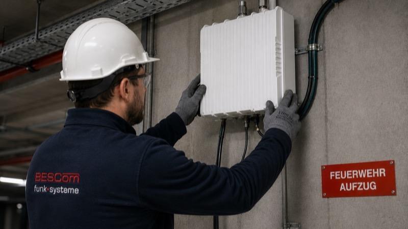

„Was kostet eine BOS-Objektfunkanlage?" ist die erste Frage in fast jedem Beratungsgespräch – und die Antwort „das kommt darauf an" hilft niemandem weiter. Deshalb legen wir in diesem Artikel die Zahlen offen: reale Preisspannen aus über 200 Projekten in Hamburg und Norddeutschland, aufgeschlüsselt nach Gebäudetyp und Kostenposten.
Vorweg das Wichtigste: Eine BOS-Objektfunkanlage ist keine Option, sondern bei vielen Gebäuden eine baurechtliche Pflicht nach DIN 14024. Ohne abgenommene Anlage gibt es keine Nutzungsfreigabe – die Kosten der Anlage sind also immer gegen die Kosten eines stillstehenden Gebäudes zu rechnen.
Was den Preis bestimmt
Vier Faktoren bestimmen den Preis Ihrer Anlage maßgeblich:
1. Gebäudegröße und Geometrie. Je mehr Quadratmeter und Geschosse versorgt werden müssen, desto mehr Antennen, Kabelwege und Repeater-Leistung sind nötig. Tiefgaragen und Untergeschosse sind dabei aufwendiger als offene Flächen.
2. Bauweise. Stahlbeton, bedampfte Glasfassaden und Brandschutztüren dämpfen Funksignale. Ein Gebäude mit viel Stahl und Beton braucht ein dichteres Antennennetz als ein einfacher Hallenbau.
3. Anforderungen der Feuerwehr. Die Hamburger Feuerwehr definiert, welche Bereiche mit welcher Feldstärke versorgt sein müssen. Sicherheitstreppenhäuser, Aufzüge und Sammelstellen haben besondere Anforderungen.
4. Neubau oder Nachrüstung. Im Neubau lassen sich Kabelwege in die Rohbauphase integrieren. Die Nachrüstung im Bestand erfordert mehr Aufwand für Brandschutzdurchführungen und Montage im laufenden Betrieb.

Kostenübersicht nach Gebäudetyp
Die folgenden Spannen stammen aus realen Projekten. Sie umfassen Planung, Technik, Installation, Messung und Abnahmebegleitung – also das komplette Projekt bis zur behördlichen Freigabe:
| Gebäudetyp | Typische Größe | Preisspanne |
|---|---|---|
| Tiefgarage / Parkhaus | 2.000–8.000 m² | 15.000–40.000 € |
| Bürogebäude | 4.000–15.000 m² | 30.000–80.000 € |
| Hotel / Pflegeheim | 5.000–20.000 m² | 35.000–90.000 € |
| Logistikzentrum | 10.000–50.000 m² | 50.000–120.000 € |
| Einkaufszentrum / Hochhaus | ab 20.000 m² | 80.000–150.000 € |
Kleinere Anlagen beginnen also bei rund 15.000 €, große Gebäude liegen zwischen 50.000 und 150.000 €. Ausreißer nach oben gibt es bei Sonderbauten mit extremen Anforderungen – Ausreißer nach unten sind meist ein Warnsignal für unvollständige Angebote.
Die einzelnen Kostenposten
Ein seriöses Angebot schlüsselt die Kosten auf. Grob verteilen sie sich so: Etwa 15–20 % entfallen auf Planung und Genehmigungsverfahren (Funknetzplanung, Behördenabstimmung, BDBOS-Anzeigeverfahren), 40–50 % auf die Technik (Repeater, Antennen, Kabel, unterbrechungsfreie Stromversorgung), 25–30 % auf die Installation und rund 10 % auf Messung, Dokumentation und Abnahmebegleitung.
Achten Sie darauf, dass die Abnahmemessung nach DIN 14024 und die vollständige Dokumentation enthalten sind. Fehlen diese Posten, zahlen Sie sie später nach – oder die Abnahme scheitert.
Laufende Kosten
Nach der Abnahme ist die Anlage nicht „fertig": BOS-Objektfunkanlagen unterliegen einer Wartungspflicht. Rechnen Sie mit 1.500 bis 4.000 € pro Jahr für die vorgeschriebene Wartung inklusive Funktionsprüfung, Akku-Test und Dokumentation. Ein Wartungsvertrag sichert Sie gegenüber Behörde und Versicherung ab.
Wo Sie sparen können – und wo nicht
Sparen können Sie durch frühe Planung: Wer den Objektfunk schon in der Entwurfsphase mitdenkt, spart Kabelwege, Durchbrüche und teure Nachträge. Auch eine Erforderlichkeitsmessung kann sich lohnen – im besten Fall zeigt sie, dass gar keine Anlage nötig ist.
Nicht sparen sollten Sie an Planungsqualität und zertifizierten Komponenten. Eine Anlage, die durch die Abnahme fällt, kostet doppelt: Nachbesserung plus verschobene Nutzungsfreigabe. Jeder Monat Verzögerung kostet bei einem Gewerbeobjekt schnell mehr als die gesamte Funkanlage.
Rechenbeispiel: Bürogebäude in der Hamburger City
Wie sich die Zahlen in der Praxis zusammensetzen, zeigt ein typisches Projekt: ein Bürogebäude mit 8.000 m², sieben Geschossen und zweigeschossiger Tiefgarage. Die Funknetzplanung ergab zwei Repeater-Standorte und ein Antennennetz mit 34 Antennen, schwerpunktmäßig in Tiefgarage, Treppenhäusern und Technikflächen.
Die Projektsumme lag bei rund 62.000 €: etwa 11.000 € für Planung, Behördenabstimmung und Anzeigeverfahren, 29.000 € für Technik und Material, 16.000 € für Installation und Inbetriebnahme sowie 6.000 € für Messung, Dokumentation und Abnahmebegleitung. Vom Konzeptgespräch bis zur bestandenen Abnahme vergingen 14 Wochen – die Installation selbst dauerte nur drei davon.
Interessant für Bauherren: Wäre der Objektfunk erst nach Fertigstellung des Innenausbaus beauftragt worden, hätten allein die nachträglichen Kabelwege und Brandschutzdurchführungen das Projekt um schätzungsweise 15.000 € verteuert. Der früheste sinnvolle Zeitpunkt für die Beauftragung ist die Genehmigungsplanung.
Angebote richtig vergleichen
Wenn Sie mehrere Angebote einholen, vergleichen Sie nicht nur die Endsumme. Prüfen Sie drei Punkte: Erstens, ob das Anzeigeverfahren und die Behördenabstimmung enthalten sind – dieser Aufwand wird gern „vergessen" und später nachberechnet. Zweitens, ob die Abnahmemessung nach DIN 14024 mit vollständiger Dokumentation Teil des Angebots ist. Drittens, ob der Anbieter eine BODeV-Zertifizierung nachweisen kann – ohne qualifizierten Errichter akzeptiert die Behörde die Anlage nicht, egal wie günstig sie war.
Ein Festpreisangebot schützt Sie zusätzlich: Bei Projekten mit klarer Planungsgrundlage gibt es keinen Grund für offene Stundenkontingente oder „nach Aufwand"-Positionen bei den Kernleistungen.
Fazit
Eine BOS-Objektfunkanlage in Hamburg kostet je nach Gebäude zwischen 15.000 und 150.000 €. Entscheidend ist nicht der niedrigste Angebotspreis, sondern ein vollständiges Projekt mit garantierter Abnahme. BESCom arbeitet mit Festpreisen: Nach der kostenlosen Ersteinschätzung wissen Sie genau, was Ihre Anlage kostet – und dass sie durch die Abnahme kommt.
BESCom erstellt Ihnen nach einer kostenlosen Ersteinschätzung ein belastbares Festpreisangebot für Ihre BOS-Objektfunkanlage – ohne versteckte Posten.